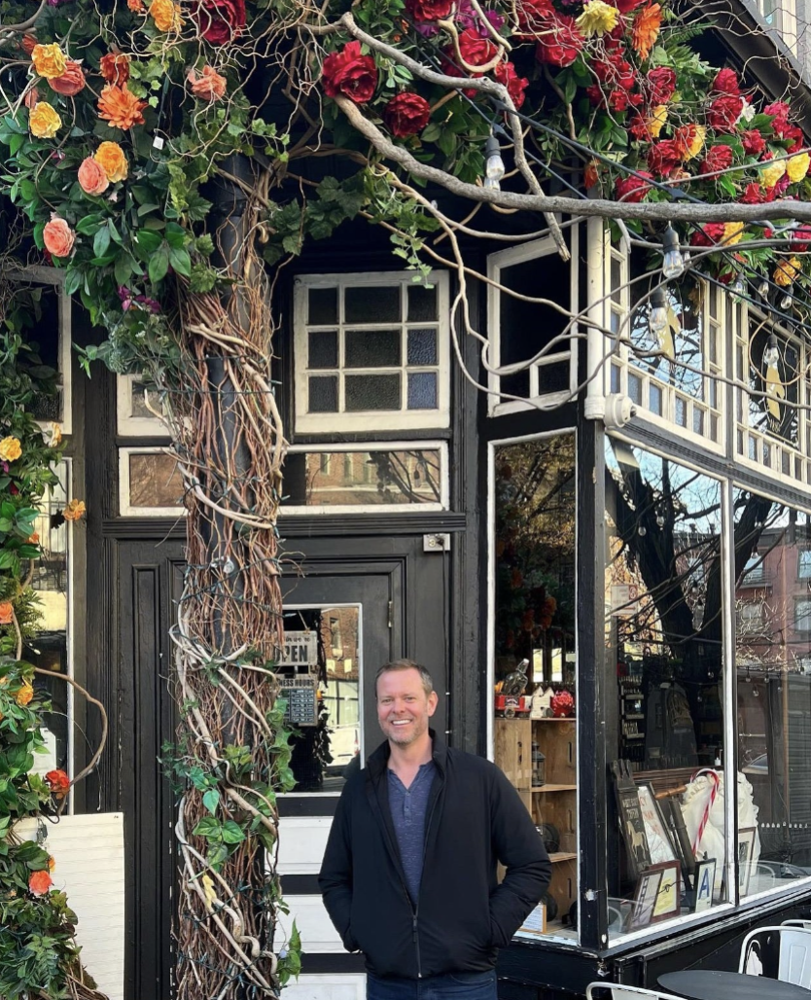

A mentorship program rooted in clarity, identity, and practical support for the next generation. Named for Merrily's brother Jed — who embodied exactly what this program aims to give.
Jed Mellick
JEM stands for Jed Edward Mellick — Merrily's brother, and one of the most genuine, grounded people she's known. Jed had a rare quality: he could meet you exactly where you were, without judgment, and help you see clearly what you already knew.
"He had a way of asking the right question at the right moment — not to redirect you, but to help you hear yourself." — Merrily Mellick, Founder
The JEM Program was created to honor that quality — and to give the next generation the kind of grounded mentorship that changes a life's trajectory.
The JEM bag in the photo above traveled with Merrily as she built this program — a quiet reminder of who she's building it for.
Mentorship built on clarity, identity, and the practical tools to move forward — for young adults at the beginning of building their own lives.
Help young adults identify what they actually want — not what's expected of them. Building self-trust before building a plan.
A space to think out loud, ask real questions, and navigate the complexity of early adulthood without performance pressure.
The Compass Method, Personal Org Chart, and Shoulds Inventory — adapted for the questions and choices of young adult life.
Help participants understand who they are before the world tells them who to be. Values-first, not résumé-first.
Small wins, consistent check-ins, and a repeatable framework for making deliberate choices as they grow.
JEM mentors walk alongside — the same principle at the heart of every Perf Life coaching relationship.

The JEM Program is designed for young people — roughly 18 to 30 — who are navigating the questions that define early adulthood:
Jed would have known exactly what to say to someone asking those questions. JEM is that voice.
The JEM Program is actively being developed. If you're interested for yourself or someone you know, leave your email and you'll be the first to hear when enrollment opens.
No spam. Just a message when JEM opens.